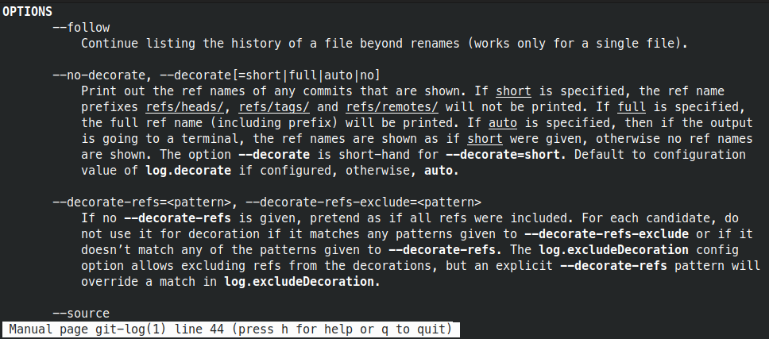
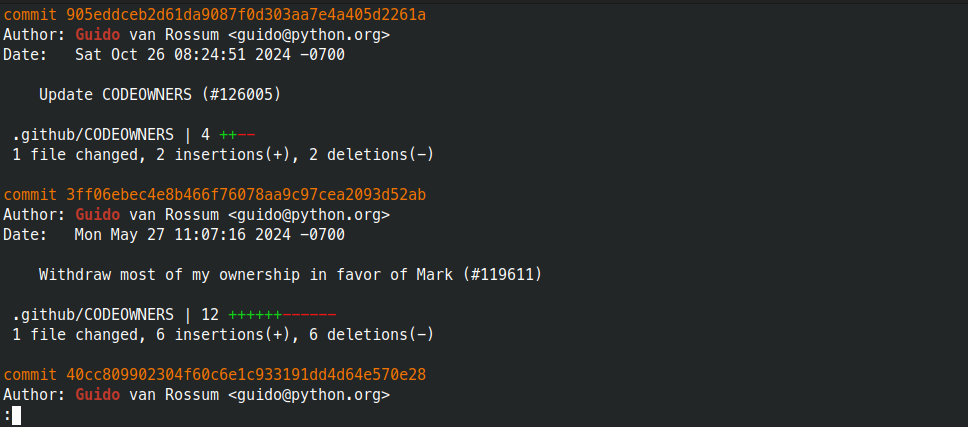
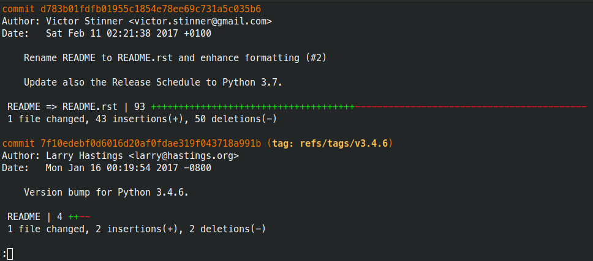
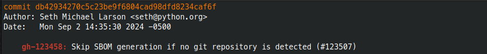
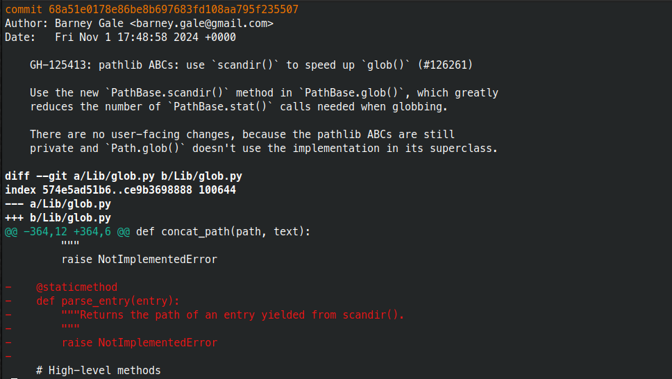
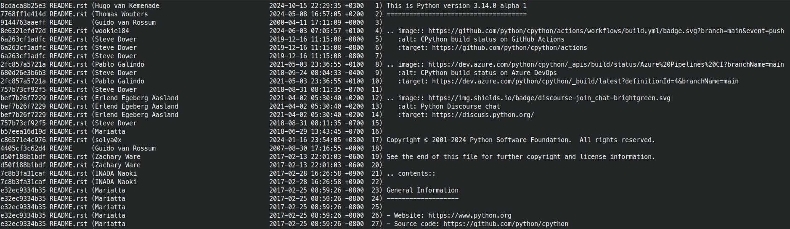

git config --global user.name "Your Name"
git config --global user.email "your.email@example.com"
git config --global core.editor nano
git config --global init.defaultBranch main
# For Linux or macOS:
git config --global core.autocrlf input
# For Windows:
git config --global core.autocrlf true
# If you're behind a corporate proxy on Windows
git config --global http.sslBackend schannelblog repository:git loggit blamegit bisectgit loggit log to list commitsgit log can be customised with
optionsgit log --help lists the available options

git log --stat --author "Guido"

--stat counts lines changed in each file
git log --stat --follow -- README.rst

--follow includes commits made when the file had
another name (Git can follow most renames)-- tells Git that what comes next is a filegit log --grep "gh-123458:"

--grep searches commit messages - so make them useful!
parse_entry removed?git log --patch -S "parse_entry"

-S searches the contents of lines changed
--patch shows the diff of each commitAnswer very specific questions like:
Didn’t Ben make an important change to
login.htmlthe week before we went on holiday?
git log \
--author Ben \
--since 2023-12-18 \
--until 2023-12-22 \
-- login.htmlgit blame -- README.rst

git show 914476 to see the contents of a
commit-w-M) or whole repo
(-C)git bisect start bad1 g00d
git bisect good
git bisect bad
git bisect bad
git bisect reset
git bisect skip
diff, blame, pickaxe)Git commands that alter your repository
---
config:
mirrorActors: false
---
sequenceDiagram
Working Directory->>Staging Area: git add
Staging Area->>Local Branch: git commit
Local Branch->>Working Directory: git restore
Local Branch->>Local Branch: git revert
Local Branch-->>Working Directory: (changing the current commit updates files)
---
config:
mirrorActors: false
---
sequenceDiagram
box Local Repository
participant Working Directory
participant Staging Area
participant Local Branch
participant Remote Branch Reference
end
box Remote Repository (e.g. GitHub)
participant Remote Branch
end
Working Directory->>Staging Area: git add
Staging Area->>Local Branch: git commit
Local Branch->>Working Directory: git restore
Local Branch->>Local Branch: git revert
Local Branch->>Remote Branch: git push
Remote Branch->>Remote Branch Reference: git fetch
Remote Branch Reference->>Local Branch: git merge --ff-only origin/*
Local Branch-->>Working Directory: (changing the current commit updates files)
RichardLitt?